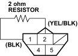

Special Tool Required
Adjustable ring wrench 07WAA-0010100
NOTE: For the fuel gauge system circuit diagram, refer to the Gauges Circuit Diagram (see page 22-88).
- Check the No. 10 METER (7.5A) fuse in the under-dash fuse/relay box before testing.
- Do the gauge drive circuit check (see page 22-30).
- If the fuel gauge needle sweeps from the minimum to maximum position and then returns to the minimum position, the gauge is OK. Go to step 3.
- If the fuel gauge needle does not sweep from the minimum to maximum position and then back to the minimum position, replace the gauge assembly and retest.
- Turn the ignition switch OFF.
- Remove the rear seat cushion, refer to the 2001 Civic 3-door Shop Manual on this CD (see page 20-40).
- Remove the access panel (A) from the floor.

- Disconnect the fuel pump 5P connector (B).
- Measure voltage between the fuel pump 5P connector terminals No. 1 and No. 2 with the ignition switch ON (II). There should be battery voltage.
- If the voltage is as specified, go to step 8.
- If the voltage is not as specified, check for:
- an open in the YEL/BLK or BLK wire.
- poor ground (G501).
FUEL PUMP 5P CONNECTOR

Wire side of female terminals
- Turn the ignition switch OFF. Remove the No. 9 BACK UP (10A) fuse from the under-hood fuse/relay box for at least 10 seconds and reinstall it.
- Install a 2 ohm resistor between the fuel pump 5P connector terminals No. 1 and No. 2, then turn the ignition switch ON (II).
FUEL PUMP 5P CONNECTOR

Wire side of female terminals